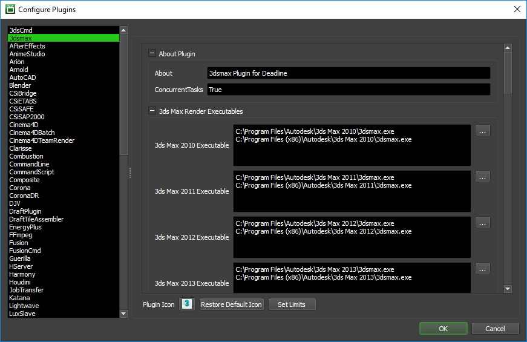
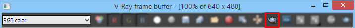

3ds Max¶
Note
As of Deadline 10, Autodesk’s Backburner is no longer required to be installed with 3ds Max to allow Deadline to control network rendering of 3ds Max.
Job Submission¶
There is a large number of ways to submit 3ds Max jobs to Deadline. You can submit a 3ds Max job using:
The Submit 3dsmax Job To Deadline dialog in the Deadline Monitor.
The Submit Max To Deadline (SMTD) integrated submitter within 3ds Max.
The Render Pass Manager (RPManager) by Grant Adam.
The integrated Deadline submitters of other Thinkbox and 3rd party plugins like Krakatoa MX, Stoke MX, XMesh MX, PhoenixFD, etc.
Custom scripts based on the SMTD Functions, or based on Deadlinecommand calls.
The 3ds Command integrated submitter which uses the 3dsmaxcmd.exe command line rendering application.
The 3ds Command Monitor submitter which uses the 3dsmaxcmd.exe command line rendering application.
Each of these options has its benefits. In general, we encourage our users to prefer the integrated submitters over the Monitor ones, and the 3dsmax job ones over the 3dscommand ones.


Troubleshooting Render Issues¶
The troubleshooting guide does not handle some differences specific to 3ds Max rendering. This guide will focus on the specifics related to how Deadline runs 3ds Max renders.
To start isolating 3ds Max job from Deadline, we would need to make sure that you are able to render (not just open) the scene that errored on render node while signed in as the user the Worker is running as. It’s important to test on the same render node that had the error so that if the issue is related to the configuration of the individual render node, we`ll be testing for it. You can find the name of the render node at the end of the task report on the line with “Worker Name:”. If you’re able to, try isolating your 3ds Max job from Deadline. The steps are outlined here:
Step 1. Submit the same job with the 3ds Command submitter, if you don’t have the submitter installed then here is a documention you can follow. To make sure the file paths to ensure a simpler file path, uncheck the “Submit the Scene File with the Job” on the submitter window. We do this to simplify the way 3dsMax is run. Our 3ds Max application plugin communicates with 3dsMax by starting a socket to send commands to it and get output. 3ds Command runs 3dsMax using only command line flags which allows us to best identify and troubleshoot issues. We choose to not submit the scene file with the job, as it copies the .max file to a temporary location and we may lose the file by the time we go to the next step.
Step 2. Now click on the “Submit” button and let the job run for a bit. If it generate errors, we would need to pull the logs from the job. In the render log look for a line that contains the phrase “Full Command”. The following command is what we used to start 3dsMax. Run the command in the Command Prompt, Terminal, or Shell as applicable on the render node while signed in as the user running the Worker to recreate the worker’s render behavior. You may need to adjust the paths used in the command, just double check it to be sure. If the render fails, then the issue would be either in the scene or in the render node itself. Try testing with a simpler scene, or on a different render node to identify which of the two is the issue.
Step 3. If the render finished successfully through 3ds Command, then is likely to be an issue in how the Worker is starting 3dsMax and the setup environment it is using. We would need to investigate the issue within Deadline, please contact AWS Thinkbox Support with the log you used from Step #2 and the output from your command prompt test so we can compare them to see what the Worker is doing that’s causing this file to fail.
Installation Instructions¶
See here for the installation instructions of the integrated SMTD script .
See here for the installation instructions of the integrated submitter for RPManager.
Plugin Configuration¶
You can configure the 3dsmax plugin settings from the Monitor. While in power user mode, select Tools -> Configure Plugins and select the 3dsmax plugin from the list on the left.
3ds Max Render Executables
3ds Max Executable: The path to the 3ds Max executable file used for rendering. Enter alternative paths on separate lines. Different executable paths can be configured for each version installed on your render nodes.
3ds Max Design Render Executables
3ds Max Design Executable: The path to the 3ds Max Design executable file used for rendering. Enter alternative paths on separate lines. Different executable paths can be configured for each version installed on your render nodes.
Render Options
Alternate Plugin ini File: Location of alternate
plugin.inifile. This location must be accessible from the Worker machines.Fail On Existing 3dsmax Process: Prevent Deadline from rendering when 3ds Max is already open.
Run Render Sanity Check: If enabled, Deadline will do a quick sanity check with 3dsmaxcmd.exe prior to rendering to ensure 3dsmax is properly set up for network rendering.
Kill ADSK Comms Center Process: If enabled, Deadline will kill Autodesk Communications Center process if its running during network rendering. This will fix a known Progress Update Timeout error that can occur when 3dsMax is loading or executing the
customize.msMAXScript file.Disable Saving Output To Alternate File Name: If enabled, Deadline won’t try to rename the output file(s) if it is unable to save the output to its default file name.
Timeouts
Timeout For Running Render Sanity Check: Maximum time to run a quick sanity check with 3dsmaxcmd.exe prior to rendering to ensure 3ds Max is properly set up for network rendering, in seconds. Default: 60 seconds (1 minute).
Timeout For Loading 3dsmax: Maximum time for 3dsmax to load, in seconds. This timeout is waiting for 3ds Max to start up here and initiate communications. Default: 1000 seconds (16 minutes and 40 seconds).
Timeout For Starting A Job: Maximum time for 3dsmax to start a job, in seconds. This is the timeout for 3dsmax to load the scene file. In the majority of cases, it is likely caused by ADSK Comms Center, 3rd party plugin/script or bad configuration of 3ds Max. Alternatively, the scene file could be taking a very long time to load (lots of assets, slow network connection). Please review the 3ds Max network log within a job’s error report for further details to debug. In the first instance, try enabling the setting: Kill ADSK Comms Center Process in your 3ds Max plugin configuration. Feel free to contact Deadline Support if unresolvable. Default: 1000 seconds (16 minutes and 40 seconds).
Timeout For Customize.ms Script Execution: Maximum time for customize.ms script to execute, in seconds. Default: 1000 seconds (16 minutes and 40 seconds).
Timeout For Progress Updates: Maximum time before progress update times out, in seconds. This is the timeout between status messages from the renderer. Default: 8000 seconds (133 minutes and 20 seconds).
V-Ray DBR and Mental Ray Satellite Rendering
Use IP Addresses: If offloading a V-Ray DBR, Corona or Mental Ray Satellite render to Deadline, Deadline will update the appropriate config file with the host names of the machines that are running the V-Ray Spawner, Corona or Satellite service. If this is enabled, the IP addresses of the machines will be used instead.
Mental Ray Satellite Off-Load Rendering
MR Port Number 3ds Max 2010: The port number that the master machine will use to communicate to the Mental Ray Satellite Service over TCP/IP for 3dsMax 2010. Leave BLANK to use default port.
MR Port Number 3ds Max 2011: The port number that the master machine will use to communicate to the Mental Ray Satellite Service over TCP/IP for 3dsMax 2011. Leave BLANK to use default port.
MR Port Number 3ds Max 2012: The port number that the master machine will use to communicate to the Mental Ray Satellite Service over TCP/IP for 3dsMax 2012. Leave BLANK to use default port.
MR Port Number 3ds Max 2013: The port number that the master machine will use to communicate to the Mental Ray Satellite Service over TCP/IP for 3dsMax 2013. Leave BLANK to use default port.
MR Port Number 3ds Max 2014: The port number that the master machine will use to communicate to the Mental Ray Satellite Service over TCP/IP for 3dsMax 2014. Leave BLANK to use default port.
MR Port Number 3ds Max 2015: The port number that the master machine will use to communicate to the Mental Ray Satellite Service over TCP/IP for 3dsMax 2015. Leave BLANK to use default port.
MR Port Number 3ds Max 2016: The port number that the master machine will use to communicate to the Mental Ray Satellite Service over TCP/IP for 3dsMax 2016. Leave BLANK to use default port.
MR Port Number 3ds Max 2017: The port number that the master machine will use to communicate to the Mental Ray Satellite Service over TCP/IP for 3dsMax 2017. Leave BLANK to use default port.
V-Ray DBR Process Handling
Handle Existing Spawner Process: Either FAIL on existing V-Ray Spawner process or KILL the existing V-Ray Spawner process if already running. Default: “Fail On Existing Process”.
V-Ray DBR Off-Load Rendering
Dynamic Start: If enabled, a V-Ray DBR off-load job will start rendering immediately after TaskId=0 (master machine) has started rendering. With V-Ray v3.2 (min SP2) onwards, Workers dequeuing tasks of this job will start participating in the ongoing render when V-Ray re-scans it’s *.cfg file on the master machine. Default: True.
V-Ray Port range: The port number (20204) or range (20204-20212) that the master machine will use to communicate to the V-Ray Spawner over TCP/IP. Default: 20204.
Use local host: When enabled, the master TaskId=0 machine (the Worker from which initiates the DR off-load render) will also take part in the rendering calculations. If disabled, this Deadline Worker only organizes the DR process, sending rendering tasks to the Deadline Workers. Default: True.
When you are submitting a V-Ray DBR off-load render job with a large number of Workers (5+), it is recommended to set the Use local host setting to
Falseto reduce computational load on the “master” machine. When Use local host is set toFalse, the “master” machine only acts as a coordinator of the DBR Workers. This is particularly important if you intend to use the V-Ray v3+ “Transfer missing assets” feature.Note
Windows 7 OS has a limitation of a maximum of 20 other machines concurrently ‘connecting’ to the “master” machine.
Warning
V-Ray v3.00.0x has a bug in DBR when the “Use local host” setting is set to
False, it still demands a render node license. This is resolved in a newer version of V-Ray. Please contact Chaos Group for more information.Transfer missing assets: This option allows Deadline Workers to automatically download missing rendering assets from the master machine. This includes textures, V-Ray proxy files, IES profiles, GI solution caches (irradiance map, light cache), X-Ref scenes etc. Default: False.
Use cached assets: This option tells the Deadline Workers to keep the downloaded rendering assets between different DR sessions. Default: False.
Cache limit type: Allows you to specify under what conditions the assets cache is cleaned up. The possible values are: None, Age (hours), Size (GB). Default: None.
Cache limit value: The specific value of the limit for the asset cache. This is either hours or GB, depending on the value of Cache limit type. Min:0.0, Max:1000000.0. Default: 100.0.
V-Ray RT DBR Off-Load Rendering
Dynamic RT Start: If enabled, a V-Ray RT DBR off-load job will start rendering immediately after TaskId=0 (master machine) has started rendering. With V-Ray v3.2 (min SP2) onwards, Workers dequeuing tasks of this job will start participating in the ongoing render when V-Ray RT re-scans it’s *.cfg file on the master machine. Default: True.
V-Ray RT Port range: The port number (20206) or range (20206-20212) that the master machine will use to communicate to the V-Ray RT Spawner over TCP/IP. Default: 20206.
Auto-start local Worker: When enabled, the master TaskId=0 machine (the Worker from which initiates the V-Ray RT DR off-load render) will also take part in the rendering calculations. If disabled, this Deadline Worker only organizes the V-Ray RT DR process, sending rendering tasks to the Deadline Workers. Default: True.
It is recommended to disable Auto-start local Worker checkbox to reduce network traffic on the “master” machine, when using a large number of Workers (5+). If disabled, the “master” machine only organises the DBR process, sending rendering tasks to the Deadline Workers. This is particularly important if you intend to use the V-Ray v3+ “Transfer missing assets” feature. Note that Windows 7 OS has a limitation of a maximum of 20 other machines concurrently ‘connecting’ to the “master” machine.
Corona DR Off-load Rendering
Handle Existing DR Process: Either Do Nothing, FAIL on existing DR process or KILL the existing DR process if already running.
DR Server No Gui:In Corona 1.4 onwards, a ‘–-noGui’ option is available to run the DR Server without UI.
Arnold Options
Abort On Arnold License Fail: If ‘Always Fail’, the render will fail if Arnold cannot get a license. If ‘Never Fail’, Arnold will render with a watermark if it cannot get a license. If ‘Use Scene’, Arnold will render with the value set by the scene. (Only applies when Arnold is the Renderer).
Firewall Considerations¶
Here is an non-exhaustive list of specific 3dsMax related application executables which should be granted access to pass through the Windows Firewall for all applicable policy scopes (Windows - domain, private, public) and both inbound & outbound rules (where <maxroot> is the 3dsMax install directory):
<maxroot>/3dsmax.exe
<maxroot>/3dsmaxcmd.exe
<maxroot>/maxadapter.adp.exe
<maxroot>/vrayspawnerYYYY.exe where YYYY is the yearDate such as “2015” (Only applicable if V-Ray installed)
<maxroot>/python/python.exe
<maxroot>/python/pythonw.exe
Autodesk Communication Center (InfoCenter) Path (dependent on 3dsMax version being used):
3dsMax 2009-2010:
C:\Program Files\Common Files\Autodesk Shared\WSCommCntr1.exe3dsMax 2011:
C:\Program Files\Common Files\Autodesk Shared\WSCommCntr\lib\WSCommCntr2.exe3dsMax 2012:
C:\Program Files\Common Files\Autodesk Shared\WSCommCntr3\lib\WSCommCntr3.exe3dsMax 2013-current:
C:\Program Files\Common Files\Autodesk Shared\WSCommCntr4\lib\WSCommCntr4.exe
It is recommended to always start 3dsMax for the very first time with Administrative rights to ensure the application is fully initialized correctly. This can be achieved by right-clicking the 3dsmax.exe application and selecting “Run as administrator”.
Integrated Submission Script Setup¶
The following procedures describe how to install the integrated Autodesk 3ds Max submission script. The integrated submission script allows for submitting 3ds Max render jobs to Deadline directly from within the 3ds Max editing GUI. The integrated render job submission script and the following installation procedure has been tested with 3ds Max versions 2014 and later (including Design editions).
You can either run the Submitter installer or manually install the submission script.
Submitter Installer¶
Run the Submitter Installer located at
<Repository>\submission\3dsmax\Installers
Manual Installation¶
Copy the file:
[Repository]\submission\3dsmax\Client\Deadline3dsMaxClient.mcr to [3ds Max Install Directory]\MacroScripts
If you don’t have a MacroScripts folder in your 3ds Max install directory, check to see if you have a
UI\Macroscriptsfolder instead, and copy the Deadline3dsMaxClient.mcr file there if you do.Copy the file:
[Repository]\submission\3dsmax\Client\SMTDSetup.ms to [3ds Max Install Directory]\scripts\Startup\SMTDSetup.ms

RPManager Script Setup¶
To install the 3ds Max integrated submission script in RPManager, just follow these steps:
Create a Deadline[VERSION] folder in
[maxdir]\scripts\RPManager(where [VERSION] is the major version of Deadline such as 9).Copy the file:
[repo]\submission\3dsmaxRPM\Client\Deadline3dsMaxRPMClient.ms to [maxdir]\scripts\RPManager\Deadline[VERSION]\Deadline3dsMaxRPMClient.ms
In RPManager, select Customize -> Preferences to open the preferences window.
In the Network Manager section, choose Custom Submit in the drop down, and then choose the Deadline3dsMaxRPMClient.ms script you copied over.
Click OK to close the preferences, and then click on the Network tab to see the submitter.
Advanced Features For Developers¶
Debugging Deadline’s 3ds max connection¶
Deadline uses a c++ plugin .dlx in 3ds Max called Lightning to control rendering on render server machines. This .dlx exposes maxscript functions for establishing the socket based control connection with 3dsMax and Deadline, as well as for functions used by MAXScript jobs. As an additional measure, there are functions which allow one to run the renderer just as Deadline does during rendering for debugging purposes.
First, you need to go to \\your\repository\plugins\3dsmax and find the appropriate .dlx file for your version/bitness of 3dsmax you want to debug with. Copy that file to a local location on your machine. For this example, let’s assume you copied it to c:\temp\lightning\. After copying the file, rename it to Lightning.dlx.
Second, you need to configure your 3ds Max so that it loads Lightning.dlx on startup. Note that using the plugin manager to load the plugin once 3ds Max is fully started will not work properly, so you must add it to the plugin.ini file. Let’s say 3dsMax 2016 is installed to C:\Program Files\Autodesk\3ds Max 2016\en-US\. Open plugin.ini in this folder, and in the section entitled [Directories], add this line:
Lightning=c:\temp\lightning
Please note, carrying out the above setup, will cause a duplicate DLL plugin loading error if this machine then picks up a 3dsMax job via Deadline Worker running. The above setup for debugging 3dsMax-Deadline via Lightning should be considered a temporary setup only (not for production machines!).
MAXScript Interface¶
Now, if you run 3dsmax.exe, it will load Lightning.dlx, which exposes an interface object called DeadlineUtil. These functions can be used when running a MAXScript job through Deadline to get information about the job being rendered. Here are what the MAXScript interface functions are, based on running ShowInterface DeadlineUtil in the MAXScript listener.
Functions
Function |
Description |
|---|---|
string GetAuxFilename( int index) |
Gets the file with the given index that was submitted with the job. |
string GetJobInfoEntry( string key ) |
Gets a value from the plugin info file that was submitted with the job, and returns an empty string if the key doesn’t exist. |
string GetOutputFilename( int index ) |
Gets the output file name for the job at the given index. |
string GetPathMappedFilename( string fileName ) |
Applies Deadline path mapping on a filename. |
string GetSubmitInfoEntry( string key ) |
Gets a value from the job info file that was submitted with the job, and returns an empty string if the key doesn’t exist. |
int GetSubmitInfoEntryElementCount( string key ) |
If the job info entry is an array, this gets the number of elements in that array. |
string GetSubmitInfoEntryElement int index string key |
If the job info entry is an array, this gets the element at the given index. Key is the array name. Empty string returned if key doesn’t exist. |
void FailRender( string message ) |
Fails the render with the given error message. |
void LogMessage( string message ) |
Logs the message to the Worker log. |
void SetProgress( float percent ) |
Sets the progress of the render in the Worker UI. |
void SetTitle( string title ) |
Sets the render status message in the Worker UI. |
void WarnMessage( string message ) |
Logs a warning message to the Worker log. |
bool Debug_StartJob string fileName string cameraName |
Local DEBUG only. |
bool Debug_EndJob() |
Local DEBUG only. |
bool Debug_RenderFrame int frameIndex |
Local DEBUG only. |
bool RunLightningDaemon int portNumber string token |
Local DEBUG only. |
Properties
Property |
Description |
|---|---|
int CurrentFrame |
Gets the current frame. |
int CurrentTask |
Gets the current task ID. |
string JobsDataFolder |
Gets the local folder on the Worker where the Deadline job files are copied to. |
string PluginsFolder |
Gets the local folder on the Worker where the Deadline plugin files are copied to. |
string SceneFileName |
Gets the file name of the loaded 3ds Max scene. |
string SceneFilePath |
Gets the file path of the loaded 3ds Max scene. |
The RunLightningDaemon function is what Lightning uses to establish the socket connection with Deadline’s 3dsMax-Python plugin. The Debug_* functions will allow one to emulate the basic render functionality of the Daemon. All the rest are to provide values and facilities to scripts being run as MAXScript jobs on the network.
Debugging the Render¶
Once 3dsmax has started, and the DeadlineUtil interface is visible to MAXScript, you are ready to debug the render. First, attach the Debugger. You can do this by right clicking on the 3dsmax.exe task in Task Manager and choosing Debug. Alternatively, from Visual Studio you can choose Tools -> Debug Processes, then select the 3dsmax.exe process and attach the debugger to it.
With the debugger attached, run the maxscript commands to emulate the render. Let’s say the problem scene is c:\test\badscene.max, at frame 43. Here are the three Debug_* commands to run, and the values they return upon success.
DeadlineUtil.Debug_StartJob "c:\\test\\badscene.max" ""
true
DeadlineUtil.Debug_RenderFrame 43
true
DeadlineUtil.Debug_EndJob()
true
Querying Job Properties¶
Depending on when your *.ms file is executed (preLoad, postLoad, preTask, postTask, mxsJob), some of the MAXScript Interface (DeadlineUtil) properties might return an empty string. For example, if the Max scene file has not yet been loaded (in the case of a preLoad.ms script), then SceneFileName and SceneFilePath will return empty strings. Here is an example postLoad.ms script file which demonstrates how to access some of the common properties of your job:
(
local du = DeadlineUtil --this is the interface exposed by the Lightning Plugin which provides communication between Deadline and 3ds Max
if du == undefined do --if the script is not being run on Deadline (for testing purposes),
(
struct DeadlineUtilStruct --define a stand-in struct with the same methods as the Lightning plugin
(
fn SetTitle title = ( format "Title: %\n" title ),
fn SetProgress percent = (true),
fn FailRender msg = ( throw msg ),
fn GetSubmitInfoEntry key = ( undefined ),
fn GetSubmitInfoEntryElementCount key = ( 0 ),
fn GetSubmitInfoEntryElement index key = ( undefined ),
fn GetJobInfoEntry key = ( undefined ),
fn GetAuxFilename index = ( undefined ),
fn GetOutputFilename index = ( undefined ),
fn LogMessage msg = ( format "%\n" msg ),
fn WarnMessage msg = ( format "Warning: %\n" msg ),
CurrentFrame = ((sliderTime as string) as integer),
CurrentTask = ( -1 ),
SceneFileName = ( maxFilePath + maxFileName ),
SceneFilePath = ( maxFilePath ),
JobsDataFolder = ( "" ),
PluginsFolder = ( "" )
)
du = DeadlineUtilStruct() --create an instance of the stand-in struct
)--end if
du.SetTitle "Post Load MXS Script" --set the job title
du.LogMessage "Starting Post Load MXS Script..." --output a message to the log
local st = timestamp() --get the current system time
--YOUR SCENE PROCESSING CODE GOES HERE
du.LogMessage( "CurrentFrame=" + (du.CurrentFrame as string) )
du.LogMessage( "CurrentTask=" + (du.CurrentTask as string) )
du.LogMessage( "JobsDataFolder=" + du.JobsDataFolder )
du.LogMessage( "PluginsFolder=" + du.PluginsFolder )
du.LogMessage( "SceneFileName=" + du.SceneFileName )
du.LogMessage( "SceneFilePath=" + du.SceneFilePath )
--For "Plugin Info Parameters" (as displayed in Monitor -> job -> job properties > Submission Params)
--Please consult the displayed Key=Value pairs in the "Plugin Info Parameters" in Monitor such as
--"MaxVersion=2017" or "IsMaxDesign=0"
du.LogMessage( "MaxVersion=" + du.GetJobInfoEntry( "Version" ) )
du.LogMessage( "SubmittedFromVersion=" + du.GetJobInfoEntry ( "SubmittedFromVersion" ) )
--For "Job Info Parameters" (as displayed in Monitor -> job -> job properties > Submission Params)
--Please consult the Scripting API reference online -> Deadline.Jobs.Job Class Reference
--https://docs.thinkboxsoftware.com/products/deadline/10.3/2_Scripting%20Reference/class_deadline_1_1_jobs_1_1_job.html#properties
--All of our job properties can be accessed here and are prefixed with "Job" such as "JobSubmitMachine" for "MachineName="
du.LogMessage( "MachineName=" + du.GetSubmitInfoEntry( "JobSubmitMachine" ) )
du.LogMessage( "ExtraInfo0=" + du.GetSubmitInfoEntry( "JobExtraInfo0" ) )
--When dealing with lists or arrays, we must first find the element count so that we can loop and access via an index
local numDirs = du.GetSubmitInfoEntryElementCount( "JobOutputDirectories" ) --array of OutputDirectory
du.LogMessage( "numDirs: " + (numDirs as string) )
local numFiles = du.GetSubmitInfoEntryElementCount( "JobOutputFileNames" ) --array of OutputFileName
du.LogMessage ( "numFiles: " + (numFiles as string) )
for n in 0 to numDirs-1 do
(
--As we have 2 parameters to pass to this function, do not use parentheses to wrap the function call
outputDir = du.GetSubmitInfoEntryElement n "JobOutputDirectories"
du.LogMessage( "OutputDirectory" + (n as string) + "=" + outputDir )
)
for n in 0 to numFiles-1 do
(
--As we have 2 parameters to pass to this function, do not use parentheses to wrap the function call
outputFile = du.GetSubmitInfoEntryElement n "JobOutputFileNames"
du.LogMessage( "OutputFileName" + (n as string) + "=" + outputFile )
)
--To build the full output file path, combine outputDir + outputFile per index and replace #### with du.CurrentFrame + padding of 4.
du.LogMessage ("Finished Post Load MXS Script in "+ ((timestamp() - st)/1000.0) as string + " sec.") --output the job duration
true --return true if the task has finished successfully, return false to fail the task.
)--end script
FAQ¶
Which versions of 3ds Max are supported?
3ds Max versions 2014 and later are all supported (including Design editions).
Which 3ds Max renderers are supported?
Deadline should already be compatible with ALL 3ds Max renderers, but it has been explicitly tested with Scanline, iRay, MentalRay, Brazil, V-Ray, Corona, finalRender, Redshift, Arnold and Maxwell. If you have successfully used a 3ds Max renderer that is not on this list, please visit the Thinkbox Help Centre.
How can I read/write an EXR file once rendered via Deadline?
Thinkbox’s Draft provides various methods that can be used against EXR files. However, for a more GUI based approach, a number of image editing applications support the EXR image file format such as After Effects and Nuke. Adobe Photoshop has limited support, but you can use either of these 3rd party plugins to read and write EXR files with Photoshop:
Does Backburner need to be installed to render with Deadline?
Yes and No. As of Deadline 10, Backburner is no longer required to be installed for command line and network rendering. Earlier versions of Deadline still require Backburner to be installed for Deadline network rendering of 3ds Max jobs to operate correctly.
Backburner won’t install on a machine. Why?
Ensure you only have one version of Backburner installed on your system. Backburner 2016 can fail to install if Backburner 2014 is installed on your system. Backburner provides backwards compatibility support for older versions of 3dsMax. Note: Backburner is no longer required to be installed locally on each machine if you are using Deadline 10 or newer.
Does the 3ds Max plugin support Tile Rendering?
Yes. See the Tile Rendering section of the submission dialog documentation for more details.
Does the 3ds Max plugin support multiple arbitrary sized, multi-resolution Tile Rendering for both stills or animations and automatic re-assembly, including the use of multi-channel image formats and Render Elements (incl. V-Ray VFB specific image files)?
Yes. We call it ‘Jigsaw’ and it’s unique to the Deadline system! See the Tile Rendering section of the submission dialog documentation for more details.
Does the 3ds Max plugin support Batch Rendering?
Yes. See the Batch Rendering section of the submission dialog documentation for more details.
How do I setup V-Ray Render Elements in Deadline?
Deadline fully respects the V-Ray RE settings in 3ds Max. Ensure you consult the Chaos Group V-Ray manual for an understanding of how Render Elements work in 3ds Max. When using the V-Ray frame buffer, V-Ray will write render elements only if you specify either one of the V-Ray raw image file output or the Separate render channels options. If you want to specify the render elements outputs using the 3ds Max Render Output field or using the output options of the various render elements, then you have to disable the V-Ray frame buffer.
How can I submit all 3ds max cameras to render in Deadline?
There are a number of options here:
Use Batch Render dialog in 3dsMax to setup the different cameras, where to save the rendered image files to, frame range, etc and then use Deadline’s Batch Submission in SMTD to submit the cameras as separate jobs.
Use State Sets in 3dsMax to setup your render passes using different cameras and Deadline supports State Sets being submitted via SMTD.
An alternative to the built-in 3dsMax features highlighted above, you could invest in a commercial render pass management system such as RPManager which is an advanced State Sets system. Deadline provides comprehensive integration with RPManager.
Finally, our job submission in 3dsMax is via SMTD which is fully implemented using MAXScript, so any studio with a scripter or developer, could easily hook into the SMTD _struct MAXScript functions we provide and build your own custom submission system handling multiple cameras in a 3dsMax scene file as you so wish. We provide a Custom MAXScript Submission Tutorial on how this can be achieved.
Is PSoft’s Pencil+ render effects plugin supported?
Yes. Please note at least Pencil+ v3.10 is required to resolve an issue with the “line” render element failing to be rendered. Unfortunately, due to the way Pencil+ plugin and 3ds Max work together, it is not possible for this combination to support “crop” renders in 3dsMax via the “Pencil+ Line” render effect. This means that Tile/Jigsaw rendering is NOT supported in Deadline. Pencil+ Line refers to the camera’s screen geometry information for rendering. However, when using “crop”, 3ds Max outputs the geometry information with an offset. Since Pencil+ Line renders are based on the information before the offset, there is a mismatch with the data output by 3ds Max. You can see a similar problem when using Backburner’s “Split Scan Lines”. Standard 3ds Max render effects such as “Lens Effects” do not have this problem because they refer to the actual rendered pixels to apply its effects. The PSoft developers have confirmed that since this problem is related to the way 3ds Max works, there is nothing they can do on their side to fix it. Please note that “Local Rendering” is NOT supported with this plugin. Ensure any saved files are pointing back to your central file server.
When I submit a render with a locked viewport, Deadline sometimes renders a different viewport.
Prior to the release of 3ds Max 2009, the locked viewport feature wasn’t exposed to the 3ds Max SDK, so it was impossible for Deadline to know whether a viewport is locked or not. Now that the feature has been exposed, we are working to improve Deadline’s locked viewport support. However, in the 3ds Max 2010 SDK, there is a bug that prevents us from supporting it completely (Autodesk is aware of this bug).
As of 3ds Max 2015, this bug is now resolved. For earlier versions, we can only continue to recommend that users avoid relying on the locked viewport feature, and instead ensure that the viewport they want to render is selected before submitting the job. The SMTD sanity check continues to provide a warning for those versions of 3ds Max, where the locked viewport SDK bug still exists.
To assist users further, automatic handling of the locked camera viewport was added to SMTD in Deadline 10, so please ensure you are running the latest service pack to receive this functionality.
When Deadline is running as a service, 3ds Max 2015 render jobs crash during startup.
This can happen if the new Scene (Content) Explorer is docked.
This is a known issue with 3ds Max network rendering when it is launched by a program running as a service. See this AREA blog post about running 3ds Max 2015 as a service for a workaround and more information.
Can I mix 3ds Max and 3ds Max Design jobs in Deadline?
Yes. ADSK have introduced (April 2014) a new system environment variable you can set which will make all jobs from 3ds Max and 3ds Max Design appear as 3ds Max jobs: “MIX_MAX_DESIGN_BB” set to “1” to enable this feature. Note, Windows typically requires a machine restart or log-off/log-on for the new environment setting value to become available once set. ADSK have confirmed this works for 3ds Max 2015, 3ds Max Design 2015 with Backburner 2015.0.1. It may also work with 2014 SP5 version of 3ds Max and 3ds Max Design, with Backburner 2015.0.1. Note, Backburner Manager or Server are NOT required to be running to make this system work in Deadline, although Backburner software still needs to be installed on your rendernodes. Note: Backburner is no longer required to be installed locally on each machine if you are using Deadline 10 or newer.
When I submit a render job that uses more than one default light, only one default light gets rendered.
The workaround for this problem is to add the default lights to the scene before submitting the job. This can be done from within 3ds Max by selecting Create Menu -> Lights -> Standard Lights -> Add Default Lights to Scene.
Is it possible to submit MAXscripts to Deadline instead of just a *.max scene?
Yes. Deadline supports MAXscript jobs from the Scripts tab in the submission dialog.
Does Deadline’s custom interface for rendering with 3ds Max use workstation licenses?
No. Deadline’s custom interface for rendering with 3ds Max does not use any workstation licenses when running on Workers unless you have the Force Workstation Mode option checked in the submission dialog, a workstation license will be used.
Workers are rendering their first frame/tile correctly, but subsequent frames and render elements have problems or are rendered black.
Try enabling the option to “Restart Renderer Between Frames” in the submission dialog before submission, or in the job properties dialog after submission. We have found that this works 99% of the time in these cases. When enabled, the c++ Lightning plugin (unique to Deadline), will unload the renderer plugins and then reload them instantly. This has the effect of forcing a memory purge and helps to improve renderer stability, as well as ensure the lowest possible memory footprint. This can be helpful, when rendering close to the physical memory limit of a machine. See note below for when this feature should be disabled.
V-Ray Light-Cache / Irradiance Maps are not the correct file size or seem to be getting reset between incremental frames on Deadline but calculate correctly when executed locally.
Ensure the option “Restart Renderer Between Frames” is DISABLED if you are sending FG/LC/IM caching map type jobs to the farm, as the renderer will get reset for each frame and the FG/LC/IM file(s) won’t get incrementally increased with the additional data per frame and will only contain the data from the last frame it calculated. (The resulting file size will be too small as well).
3dsMax Point Cache Files dropping geometry in renders randomly
Sometimes 3dsMax can drop point cache geometry in renders, in an almost random only certain rigs fashion. Typically but not exclusively, this happens on the 2nd assigned frame processed by a particular Worker. Ensure the option “Restart Renderer Between Frames” is DISABLED in the submission dialog before submission, or in the job properties dialog after submission. We have found that this works 99% of the time in these cases.
When rendering with V-Ray/Brazil, it appears as if some maps are not being displayed properly.
Try enabling the option to “Restart Renderer Between Frames” in the submission dialog before submission, or in the job properties dialog after submission. We have found that this works 99% of the time in these cases.
Are post-render effects such as Corona’s Bloom/Glare supported when tile rendering?
No. This affects all renderers in 3ds Max specifically when tile/Jigsaw rendering. Any declared 2D post render effect in 3ds Max should only be applied to the entire rendered image after it has been stitched and not to the individual region rendered images. To workaround this 3ds Max limitation, ensure you use a post-render process to apply any render effects after Draft has stitched the tile rendered images together. In the case of Corona, you could use their Corona Image Editor (CIE) application.
Tile rendering with a Mental Ray camera shader known as “wraparound” results in an incorrect final image. How can I fix this?
This is another situation where enabling the option to “Restart Renderer Between Frames” in the submission dialog seems to fix the problem.
When tile rendering with a renderer that supports global/secondary illumination, I get bucket stamps (different lighting conditions in each tile) or ‘seams’ on the final image.
Try calculating the irradiance/final-gather/UHD light caching map first in one job at full resolution. Then perform your tile render on a scene that reads the irradiance/final-gather/UHD cache file created at full resolution. If creating the cache at full resolution is impossible then you can make it in the tile, but you need to make sure the tiles are overlapping each other (use Deadline’s tile/jigsaw padding to help here) and make sure to use the irradiance/final-gather/UHD cache method that appends to the cache file. Alternatively, you could consider using the V-Ray/Mental Ray DBR off-load system to accelerate the calculation of the light caching map.
In summary: you create (pre-calculate) the secondary/global illumination map first then run the final render in tiles as a second job. Deadline job dependencies can be used here to release the second job as the first job successfully completes the lighting pre-calculation job.
Can I perform Distributed Bucket Rendering (DBR) with V-Ray or V-Ray RT?
Yes. A special ‘reserve’ job is submitted that will run the V-Ray Spawner/V-Ray standalone process on the render nodes. Once the V-Ray Spawner/V-Ray standalone process is running, these nodes will be able to participate in distributed rendering. Please see the V-Ray Distributed Rendering (DBR) Plugin Guide for more information.
Can I fully off-load 3dsMax V-Ray or Mental Ray DBR rendering from my machine?
Yes, see the V-Ray/Mental Ray DBR section for more information. The advantages to off-loading a V-Ray DBR job fully from your workstation include; releasing your local workstation to carry out other processing tasks and helping to accelerate the irradiance map/photon cache calculation process as the V-Ray DBR system supports distributing this across multiple machines. A risk/disadvantage to this way of working is if a single machine currently being used to calculate a DBR bucket crashes/fails for an unknown reason, then the whole process will fail at it’s current stage and start from the beginning again.
Can I Perform Fume FX Simulations With Deadline?
- Yes. To do so, follow these steps:
Your render nodes need to have Fume FX licensed properly, either with a “full” or “simulation” licenses. This requirement is the same if you were rendering with Backburner.
Before you launch the 3dsmax submission script, make sure that the Fume FX NetRender toggle button is “ON” in the Fume FX options in 3dsmax.
Before you submit the job, make sure the “Disable Progress Update Timeout” option is enabled under the Render tab in the 3dsmax submission window.
Note that Fume FX uses its own frame range (in the Fume FX settings/prefs), so submit the Max scene file to Deadline as a SINGLE FRAME ONLY.
Before you submit the job, make sure the “Restart Renderer Between Frames” option is disabled under the Render tab in the 3dsmax submission window.
Can I force a render to use a specific language?
Yes. Using the option located in “User Options” tab of SMTD or in the Monitor submission, “Advanced Options” tab (2013+ only). This will change the default on the machine it is rendered on to the chosen language. Note that the change is permanent on the machine until such time 3dsMax is restarted and the language is forced to a different language. You can manually force the language to be changed back via the language specific shortcuts in the start menu, which effectively start 3dsMax with the language flag. In this example, EN-US (default) is forced: “C:/Program Files/Autodesk/3ds Max 2015/3dsmax.exe” /Language=ENU
When submitting to Deadline, non-ASCII characters in output paths, camera names, etc, are not being sent to Deadline properly.
You need to enable the “Save strings in legacy non-scene files using UTF8” property in the Preference Settings in 3ds Max. After enabling this, the Deadline submission files will be saved as UTF8 and therefore non-ASCII characters will be saved properly. See the Character Encoding Defaults in 3ds Max section in the 3ds Max Character Encoding documentation for more information.
Why do 3ds Max jobs add a period delimiter to the output filename?
Deadline 7 introduced a new Delimiter option in the integrated 3ds Max submitter (SMTD) to avoid some problems with the way render elements and other auto-generated names were formatted in previous version. The Delimiter option is set to a factory default of “.” as this is the typical convention in VFX pipelines, but it can be overridden via the Defaults INI file in the Repository. Since this setting is considered a company-wide pipeline value and should not be overridden by individual users, it is currently not exposed in the SMTD UI.
To change the Delimiter to an empty string, you can do the following:
Navigate to your Repository folder
Go to …\submission\3dsmax\Main\
Locate the SubmitMaxToDeadline_Defaults.ini file and open it in a text editor
Add the following to the [RenderingOptions] category:
[RenderingOptions] Delimiter=Make sure there is nothing after the = sign!
Save the file
Restart SMTD on your workstation
RESULT: At this point, SMTD should behave like it did in Deadline 6.x and earlier.
Note that in some cases some render element passes might be misformatted due to the lack of delimiter - this was a known issue in Deadline 6.x and earlier. For example, if a V-Ray pass was named automatically based on a TextureMap name ending with digits, the resulting file name could end up having too many trailing digits, e.g. SomeMap_420000.exr instead of SomeMap_42.0000.exr. So in the Deadline Monitor, the filename could become SomeMap_######.exr instead of SomeMap_42.####.exr. If you want to replace the “.” period character with a different character to fit your pipeline requirements, (e.g. _ underscore), you can add the character to the INI file:
[RenderingOptions] Delimiter=_In summary, you can use the new Delimiter option to provide a consistent file naming convention across your studio pipeline. Few caveats; the file naming convention for Thinkbox’s tile, region and Jigsaw remains unchanged and V-Ray v3 has introduced a maxscript property
#fileName_addDotwhich can be accessed viarenderers.current.fileName_addDotwhich by default is True, so it will also try to add a DOT character to its filenames if one is not present.
Can I use AXYZ Design’s Anima with Deadline?
Yes, but scenes with raw Anima characters should be treated in the same way as a simulation job. At this time, Deadline is only able to render from the initial task forward and only on a single machine (Use task chunking to group the frames together). If possible, export (bake) the Anima characters to a geometry caching file format such as Point Cache pc2, Thinkbox’s XMESH or V-Ray/Corona Proxies, so that individual frames can be rendered by Workers.
Why do some of my rendered images contain ‘_alt_’ in their filename after rendering via Deadline?
Deadline’s c++ plugin for 3dsMax, called ‘Lightning’ provides a special feature to resolve situations where the rendered image being saved back to your network file server is unable to save the image file to disk. The reason could be due to the pre-existing image file being ‘locked’ by another process (such as another crashed instance of 3dsmax.exe elsewhere in your pipeline) or perhaps, file permissions have changed on this particular file. Whatever the reason, ‘Lightning’ will attempt 5 times to save the rendered image (which might have taken hours to render!) to your file server, adding the additional ‘_alt_N_’ suffix, where N is the attempt to save number (1 to 5). These files might look something like this:
MyRender_v001_.3608_alt_2.exr MyRender_v001_.3609.exr MyRender_v001_.3610_alt_4.exr MyRender_v001_.3611.exr MyRender_v001_.3612.exrYou can disable this feature in the 3dsMax Plugin Configuration if you so wish with the setting: Disable Saving Output To Alternate File Name. Additionally, Deadline Monitor provides a right-click job script to allow manual intervention and help you ‘cleanup’ these ‘_alt_N_’ file names by automatically renaming them for you (typically executed once you have resolved the file lock/permission error on your file server). This job script can be found by selecting your 3dsMax job, right-click, “Scripts”, “Cleanup”, “Cleanup Alt Frames From 3ds Max”.
Gamma Settings are NOT respected in 3ds Max 2014
The original shipping version of 3ds Max 2014 (16.0.420.0) had an Autodesk undocumented issue where gamma was not correct when network rendering. This is resolved by installing the latest service pack (SP5). If you have any (gamma) issues in any version of 3ds Max, it is recommended to ensure you have installed the latest service pack / product update before contacting Deadline support.
Error Messages and Meanings¶
This is a collection of known 3ds Max error messages and their meanings, as well as possible solutions. We want to keep this list as up to date as possible, so if you run into an error message that isn’t listed here, please visit the Thinkbox Help Centre and let us know.
Note that when an error occurs in a Max render, we parse the Max render log (Max.log) for any messages that might explain the problem and include them in the error message. Some examples are:
ERR: An unexpected exception has occurred in the network renderer and it is terminating.
ERR: Missing dll: BrMaxPluginMgr.dlu
ERR: [V-Ray] UNHANDLED EXCEPTION: Preparing ray server Last marker is at .srcvrayrenderer.cpp
Error: Timed out waiting for the next progress update. 3dsMax is hanging at the point of executing the ‘customize.ms’ maxscript file
Typically, you might see something like this in your 3dsMax log report, in both the exception error and also if you review the tail of the log report:
0: INFO: Scene loaded successfully 0: INFO: Executing script: C:\..\..\..\..\..\..\slave\..\plugins\..\customize.ms 0: An exception occurred: Error: Timed out waiting for the next progress update.The root cause here is an Autodesk spawned background process known as “InfoCenter” or “CommunicationCenter”. It can be fixed by enabling the Kill ADSK Comms Center Process setting in your 3dsMax plugin configuration.
3dsmax startup: Error getting connection from 3dsmax: 3dsmax startup: Deadline/3dsmax startup error: lightningMax*.dlx does not appear to have loaded on 3dsmax startup, check that it is the right version and installed to the right place.
You likely need to install the appropriate Visual C++ Redistributable package, which is carried out automatically by the Deadline Client installer. Try re-installing the Client software if you see this error.
3dsmax startup: Error getting connection from 3dsmax: Monitored managed process “3dsmaxProcess” has exited or been terminated.
Full error message:
3dsmax startup: Error getting connection from 3dsmax: Monitored managed... DBG: Starting network DBG: Calling NetRenderPreLoad DBG: in NetWorkerPreLoad. jobFile: ; jobname: C:\Users\... DBG: in NetWorkerPreLoad. LoadLib() failed DBG: NetRenderPreLoad failed ERR: Error loading *.max file INF: SYSTEM: Production renderer is changed to Default... DBG: Stop networkThis is a known issue with 3ds Max, and can occur when IPv6 is enabled on the render node. The issue can be fixed by disabing IPv6 on the machines, or by disabing the IPv6 to IPv4 tunnel. See this Area blog post about IPv6 errors for more information.
Could not delete old lightning.dlx… This file may be locked by a copy of 3ds max
Usually this is because a 3dsmax.exe process didn’t quit or get killed properly. Looking in task manager on the Workers reporting the message for a 3dsmax.exe process and killing it is the solution.
3dsmax crashed in GetCoreInterFace()->LoadFromFile()
- There are a number of things that can be tried to diagnose the issue:
Try opening the file on a machine where it crashed. You may already have done this.
Try rendering a frame of it on a machine where it crashed, using the 3dsmaxcmd.exe renderer. This will make it open the file in Worker mode and possibly give an idea of what’s failing.
Submit the job to run in workstation mode. In workstation mode there’s often more diagnostic output. There’s a checkbox in the submission script for this.
If you’re comfortable sending us the .max file which is crashing, we’d be happy to diagnose the issue here.
Try stripping down the max file by deleting objects and seeing if it still crashes then.
Missing dll: mrmaterialattribs.gup
If you receive any of these missing dll warning messages in 3ds Max 2017:
Missing dll: mrmaterialattribs.gup - mental ray: material custom attribute Missing dll: mrarchmaterial.dlm - Arch & Design Missing dll: mentalray.dlz - Ambient/Reflective Occlusion Missing dll: mentalray.dlz - Bump Missing dll: mentalray.dlz - Subsurface Scattering Fast Skin Missing dll: mrmaterialattribs.gup - mental ray: Displacement Custom Attributes Missing dll: mentalray.dlz - Multi/Sub-Map Missing dll: mrmaterial.dlt - mental ray Missing dll: mentalray.dlz - Matte/Shadow/Reflection Missing dll: mrmaterialattribs.gup - mental ray: Indirect Illumination custom attribute Missing dll: mrmaterialattribs.gup - mental ray: light shader custom attribute Missing dll: Scripted Plugin - mr Area Omni Missing dll: Scripted Plugin - mr Area Spot Missing dll: mentalray.dlz - Contour Contrast Function Levels Missing dll: mentalray.dlz - Contour Store Function Missing dll: mentalray.dlz - Contour Composite Missing dll: mentalray.dlz - Glare Missing dll: mentalray.dlz - mrOptions Missing dll: mentalray.dlz - NVIDIA mental raythen it is likely you are trying to render a Mental Ray scene file or have a remaining Mental Ray reference in your scene file somewhere and have chosen to either not install Mental Ray when you installed 3ds Max 2017 OR are missing the entry declaring Mental Ray in your plugin ini file. Note, as of 2017, both Mental Ray and iRay renderers are now an optional install. Although in 2017 it is still enabled by default to install. If Mental Ray is indeed installed on your rendernodes, then you should check that your
Plugin.UserSettings.inifile contains an entry to load Mental Ray. This file is located under the user profile of the user account that is being to used to render with Deadline Worker, such as:# where %USERNAME% is replaced for the current user C:\Users\%USERNAME%\AppData\Local\Autodesk\3dsMax\2017 - 64bit\ENU\Plugin.UserSettings.ini
Plugin.UserSettings.inishould contain at least the following:[Directories] Additional MAX plugins=C:\Program Files\Autodesk\3ds Max 2017\PlugIns Additional MAX plugins NVIDIA=C:\Program Files\Autodesk\3ds Max 2017\PlugIns\NVIDIA\Plugins\If your studio does not use the
Plugin.UserSettings.ini, then ensure your globalplugin.inifile typically located at:C:\Program Files\Autodesk\3ds Max 2017\en-US\plugin.inicontains the above NVIDIA Mental Ray entry. Autodesk have also written a knowledge base article: Missing dll: mrmaterialattribs.gup error when sending a job via network render from 3ds Max 2017 on this issue and how to resolve it using the same guidelines that we have provided above.
Trapped SEH Exception in CurRendererRenderFrame(): Access Violation
An Access Violation means that when rendering the frame, Max either ran out of memory, or memory became corrupted. The stack trace in the error message usually shows which plugin the error occurred in. If that doesn’t help track down the issue, try stripping down the max file by deleting objects and seeing if the error still occurs.
If the last line of your job log report showed INFO: Lightning: Overriding save file option to 0 as the message, it may be related to one or more of your render output paths, including Render Element file paths being > 255 characters in length (Windows OS limitation). To resolve, simply reduce the overall length of the file path you are saving your renders to. Bear in mind, if using V-Ray’s VFB “Separate render channels” option, the overall file path may be longer than you can currently visualize inside of 3ds Max prior to network render submission. If enabled, there are SMTD Sanity Check’s to test for this situation during submission.
3dsmax: Trapped SEH Exception in LoadFromFile(): Access Violation
An Access Violation means that when loading the scene, Max either ran out of memory, or memory became corrupted. The stack trace in the error message usually shows which plugin the error occurred in. If that doesn’t help track down the issue, try stripping down the max file by deleting objects and seeing if the error still occurs.
UNHANDLED EXCEPTION: Rendering region (248,0)-(256,8) Last marker is at ./src/globillummap.cpp, line 1692: GlobalIllumMap::buildLightMap() {1}
V-Ray is crashing as the VFB “Render Region” button is enabled and is not supported via network rendering. Please disable this button and re-submit the job to Deadline. If you require region rendering, please see the Tile & Region Rendering Options. Note, SMTD has a sanity check to warn you if this button is enabled during submission. The “Run Sanity Check Automatically Before Submission” checkbox in SMTD needs to be enabled for this to work!
UNHANDLED EXCEPTION: Broadcasting NOTIFY_POST_RENDERFRAME Last marker is at ./src/globillummap.cpp, line 1932: GlobalIllumMap::buildLightMap() {5}
V-Ray is crashing at the point of calculating the GI - Light Cache map on this particular frame or referencing a pre-calculated light cache map file on the file system. In the case of pre-existing light cache files, it is recommended to verify none of the per frame LC files are corrupt? Check the file size is consistent. If not, then V-Ray render settings in the GI/Light Cache area will need to be better optimized as the current scene file setup is crashing V-Ray at render time. We understand that creating a Minidump file can be useful if then sent to support at Chaos Group to help identify the issue in your scene file. If you have the opportunity before 3dsMax crashes whilst running locally, there are several ways to create a minidump file such as using Task Manager or Process Explorer. In Task Manager, in the Applications or the Processes tabs, right click on the process and select Create Dump File. After the minidump is finished, you’ll see a dialog showing you where the dump was created. A handy feature is that the path shown is a read only edit control you can select and copy so you don’t have to try to remember a long path. Alternatively, in Process Explorer, right-click on the Create Dump option and choose Create Minidump.
3dsmax: PNG Plugin: PNG Library Internal Error
3dsMax Render Elements can become corrupt or be placed in a bad state with regard the image file format plugin trying to being used to save each Render Element to your file server. This issue is not limited to the PNG file format (TGA, TIF) but is common. A known option, which has been known to fix the issue in most circumstances, is to rebuild the render elements by deleting and re-creating them in the 3dsmax scene file. This feature is automated in SMTD if you enable the checkbox “Rebuild Render Elements” under the “Render” tab -> “3ds Max Pathing Options”.
Photoshop: Could not complete your request because it is not the right kind of document
Same error as above. 3dsMax Render Elements (bitmap image plugin) being used to save the image file extension in one or more of your Render Elements in your scene file has decided to save as a different fundamental image file format. It might say in the filename it’s a *.tif, *.png or *.tga file, but it’s actually a different image file format! When you try to open the image in AE or Photoshop, you get the cited above error message. The fix is the same as above by enabling the “Rebuild Render Elements” checkbox under the “Render” tab -> “3ds Max Pathing Options”. To save re-rendering any images, you can use an open-source application such as XnView or IrfanView to open these corrupt images, view the ‘image properties’ to identify the image file format actually being used and then rename the file extension on your file system accordingly.
RenderTask: 3dsmax exited unexpectedly (it may have crashed, or someone may have terminated)
This generic error message means that max crashed and exited before the actual error could be propagated up to Deadline. Often when you see this error, it helps to look through the rest of the error reports for that job to see if they contain any information that’s more specific.
RenderTask: 3dsmax may have crashed (recv: socket error trying to receive data: WSAError code 10054)
This generic error message means that max crashed and exited before the actual error could be propagated up to Deadline. Often when you see this error, it helps to look through the rest of the error reports for that job to see if they contain any information that’s more specific.
3dsmax startup: Error getting connection from 3dsmax: 3dsmax startup: Deadline/3dsmax startup error: lightningMax*.dlx does not appear to have loaded on 3dsmax startup, check that it is the right version and installed to the right place.
This error is likely the side effect of another error, but the original error wasn’t propagated to Deadline properly. Often when you see this error, it helps to look through the rest of the error reports for that job to see if they contain any information that’s more specific.
3dsmax startup: Max exited unexpectedly. Check that 1) max starts up with no dialog messages and in the case of 3dsmax 6, 2) 3dsmaxcmd.exe produces the message ‘Error opening scene file: “”’ when run with no command line arguments
This message is often the result of an issue with the way Max starts up. Try starting 3ds Max on the Worker machine that produced the error to see if it starts up properly. Also try running 3dsmaxcmd.exe from the command line prompt to see if it produces the message ‘Error opening scene file: “”’ when run with no command line arguments. If it doesn’t produce this message, there may be a problem with the Max install or how its configured. Sometimes reinstalling Max is the best solution.
The 3dsmax command line renderer, …\3dsmaxcmd.exe, hung during the verification of the 3ds max install
Try running 3dsmaxcmd.exe from the command line prompt to see if it pops up an error dialog or crashes, which is often the cause of this error message. If this is the case, there may be a problem with the Max install or with how it is configured. Sometimes reinstalling Max is the best solution.
3dsmax: Failed to load max file: “…”
There could be many reasons my Max would fail to load the scene file. Check for ERR or WRN messages included in the error message for information that might explain the problem. Often, this error is the result of a missing plugin or dll. Additionally, there is a known issue where a corrupt install of Backburner in 3ds Max 2015 or earlier can cause 3ds Max 2016 to fail to load its Max scene file. Autodesk provides a knowledge post Backburner Error 1721 During Install on how to resolve if this is the case.
Error: “3ds Max The Assembly Autodesk.Max.Wrappers.dll encountered an error while loading”
This is a specific 3ds Max 2015 crash when you try to launch the program. Ensure you perform a Windows update and get latest updates for Windows 7 or 8. Additionally, install the update for Autodesk 3ds Max 2015 Service Pack 1 and Security Fix. See this ADSK Knowledge post for more information.
Error message: 3dsmax adapter error : Autodesk 3dsMax 17.2 reported error: Could not find the specified file in DefaultSettingsParser::parse() ; Could not find the specified file in DefaultSettingsParser::parse() ;
The error “Could not find the specified file in DefaultSettingsParser::parse() ;” occurs if you don’t have the Populate Data installed on each of your Deadline Worker machines. To resolve the issue you need to ensure that the Populate Data is installed on all the render machines. You can run the 3dsMax_2015_PopulateData.msi installer from the “\x64\PDATA\” folder of the 3ds Max 2015 installer. In case there was a previous install of the Populate Data on the machine please delete the following folder before installing “C:\Program Files\Common Files\Autodesk Shared\PeoplePower\2.0\”. See this Area blog post for more information.
Error message: ERR: “To use this feature, you need the Evolver data. Please check the Autodesk web site for more information.”
You may get the above error message when you try to run a Populate simulation in your 3dsMax scene file. This is a known Autodesk bug and the fix is to install the Autodesk 3ds Max 2014 64-bit Populate Data component. The actual file is 3dsMax_2014_PopulateData.msi which you can find in the “\x64\PDATA\” folder of the install media. Note that if you’re running 3ds Max Design the filename will be 3dsMaxDesign_2014_PopulateData.msi. Simarily, the same bug in 3ds Max 2015 doesn’t mention Evolver anymore. Instead, it tells you to install the Populate data. See this Fixing missing Evolver data errors Area blog post for more information.
Error message: “ERROR: Please, make sure the Populate data is installed.”
This is the same error message as the previous Populate FAQ entry and is fixed by installing the Autodesk Populate Data component. See this Fixing missing Evolver data errors Area blog post for more information.
ERR: [13724] [10020] CoCreateInstance() failed. Please check your registry entries CLSID {F088EA74-2E87-11D3-B1F3-00C0F03C37D3} and make sure you are logged in as an administrator
This is a known Autodesk bug with the “skin” modifier, when a newer version of 3dsMax has unregistered a plugin dll for skin which was used by a previous version of 3dsMax. Autodesk provide the following knowledge post COM Error: CoCreateInstance failed please check your registry entries on how to resolve this issue. Alternatively, you can enable “Ignore Missing DLL Errors” in SMTD which should successfully skip this error, but your render will more than likely be incorrect due to the missing skin modifier on your object(s).
Unexpected exception (Error in bm->OpenOutput(): error code 12)
Ensure all instances of 3dsMax are running a consistent LANGUAGE. By default 3dsMax ships with the LANGUAGE code set to “ENU” - “US English” and this is recommended for the majority of customers. If you are using a 3rd party plugin in 3dsMax, please contact the plugin developer to verify that their plugin is capable of running as a different language inside of 3dsMax. Note, that the majority of 3rd party plugins are still only developed to work in “ENU”. Please see this FAQ for more information regarding options to control the LANGUAGE: 3dsMax Language Code FAQ.
Exception: Failed to render the frame.
There could be many reasons my Max would fail to render the frame. Check for ERR or WRN messages included in the error message for information that might explain the problem.
DBG: in Init. nrGetIface() failed
This error message is often an indication that 3dsmax or backburner is out of date on the machine. Updating both to the latest service packs should fix the problem.
Error when using Mental Ray DBR in 3ds Max 2016: Could not locate MDL shared core library.
When you try to use DBR (Distributed Bucket Rendering) you will get the following error message:
Could not locate MDL shared core library.To help Mental Ray satellite find this .dll copy libmdl.dll from the main 3ds Max 2016 folder to the NVIDIA/Satellite folder. Note that you have to do this on all the machines that will be used for DBR. See this Error when using Mental Ray DBR in 3ds Max 2016 Area blog post for more information.
Error: Dialog popup detected: Title “DLL Initialization Fail”, Message “Fail to initialize the defer loaded gmi.dll”
This .dll contains the NURBS functionality in 3ds Max. There may be some NURBS or body objects in use in your scene and this .dll may either have been corrupted or is being blocked by Windows Defender. Try shutting down all instances of 3ds Max on the machine displaying this issue and replace the
gmi.dllwith a known, good version of the dll file from another machine, using exactly the same version of 3ds Max. Additionally, try disabling Windows Defender and double-check any current exclusions in Defender are still in place after any Windows OS update has been applied.

{kind=link}
{kind=link}
{kind=link}
{kind=link}
{kind=link}
{kind=link}